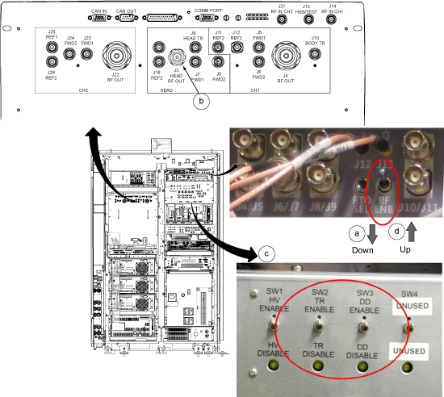

- 00000018WIA30DE0E20GYZ
- id_131061766.0
- Feb 22, 2021 1:45:50 AM
RF Amplifier and UPM Calibration
Prerequisites
| Required persons | Preliminary requirements | Procedure | Finalization |
|---|---|---|---|
| 1 | N/A minutes | 45 minutes (plus 30 minutes for Agilent wattmeter power up) | 5 minutes |
| Item | Quantity | Effectivity | Part number | Manufacturer |
|---|---|---|---|---|
| 12 inch Crescent Wrench | 1 | - | - | - |
| Medium Phillips Screwdriver | 1 | - | - | - |
| Small Flathead Screwdriver | 1 | - | - | - |
| RF power measurement kit (use one of the following kits): | 1 | - |
EITHER 5307511-2 or 5307511-3 (Bird wattmeter) BOTH 5434817 (Agilent wattmeter) and 5434817–20 (dummy load) | - |
| Digital Multimeter | 1 | - |
46-194427 P284 | - |
| ||||||||||||||||||||
| Condition | Reference | Effectivity |
|---|---|---|
|
Before beginning this procedure, confirm that the exciter has been on for at least 20 minutes. | - | - |
|
When using the Agilent wattmeter, plug in the wattmeter and turn it on. The wattmeter must be powered for at least 30 minutes for stable and accurate readings. | - | - |
About this task
This procedure provides instruction to set up and calibrate the maximum power for the RF amplifier. The procedure also proceeds through the calibration and functional check of the Universal Power Monitor (UPM) for each channel.
Use the UPM Tool to process each channel through each procedure. For example, when you select Head mode, the tool executes the RF amplifier calibration and, if the amplifier passes, proceeds to the UPM calibration and then to the functional check. The process is order-dependent.
For RF Amp calibration, process body channel 1 first, then body channel 2, and then the Head channel last.
Per each channel calibration, RF amplifier forward power for channel is performed first, then UPM forward and reflected power calibration for channel, and finally UPM functional check is performed for channel.
Coolant Temperature Check
Procedure
Disabling T/R, DD, and RF Input for Body Mode
Procedure
Hardware Setup for RF Body 1 Calibration
Procedure
Adjusting RF Amplifier Output Power for Body Channel 1
Procedure
- Press Landmark. Then, advance to scan. A phantom is not needed.
Figure 4. Adv to scan 
- When a popup titled RF Amp Calibration appears as shown Figure 6, do not select the Success or Failure button at this time. First, go to the Scan Desktop as shown in Figure 7.
Figure 6. RF Amp Calibration Popup 
- In the Prescan Looping window, set Transmit Gain (TG) to 100.
Figure 8. Prescan Looping Window 
- From the scan desktop, click the CSD icon.
Figure 10. CSD icon 
Calibrating UPM Forward Power for Body Channel 1
Procedure
Calibrating UPM Reflected Power for Body Channel 1
About this task
After calibrating forward power, calibrate reflected power as follows.
Procedure
UPM Functional Check for Body Channel1
About this task
After completing the UPM calibration, continue with the UPM functional check.
Procedure
Setting up and Calibrating RF Amplifier for Body Channel 2
Procedure
Calibrating UPM Forward Power for Body Channel 2
About this task
After RF amplifier calibration is completed, proceed to calibrating forward power for body channel 2.
Procedure
Calibrating Reflected Power for Body Channel 2
About this task
After calibrating forward power, calibrate reflected power as follows.
Procedure
UPM Functional Check for Body Channel 2
Procedure
Disabling T/R, DD, and RF Input for Head Channel
Procedure
| Notice | |
|---|---|
- On the front of the driver module, disable the TR and DD fault detection. Set SW2 to TR DISABLE (down) and set SW3 to DD DISABLE (down). Note: Leave HV set to ENABLE.
- Set RF Enable to DISABLE (down).
Hardware Setup for RF Head Calibration
Procedure
Adjusting RF Amplifier Output Power for Head Chennel
Procedure
- Press Landmark. Then, advance to scan. A phantom is not needed.Note: No phantom is needed since dummy command for head connection is set in UPM Tool Head mode for SIGNA Pioneer.
Figure 26. Adv to scan
UPM Calibration for Head Channel
Procedure
UPM Functional Check for Head Channel
Procedure
CAUTION 
Restore RF cables per following steps.Notice 
- Set the RF ENB switch to DISABLE (down).
- Disconnect the RF coupler from J3 and reconnect the head and transmit cables.
- Re-enable the TR and DD fault switches on the front of the driver module.
- Set RF ENB switch to ENABLE (up).
Figure 31. Restore RF Amp 
Finalization
Procedure
- Confirm that the other RF amplifier system cables are reconnected to their correct locations for clinical scanning.
- Perform Check Scan.
- If all the calibrations have been successfully made, perform a SaveInfo to save the UPM calibration results.